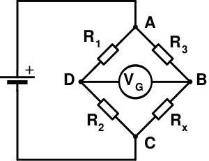
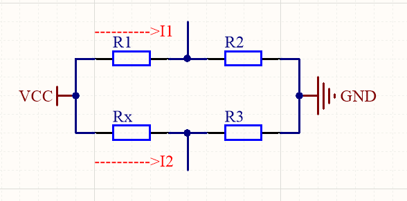

1. 电阻桥定义解释
惠斯通电桥是由四个电阻组成的电桥电路，这四个电阻分别叫做电桥的桥臂，惠斯通电桥利用电阻的变化来测量物理量的变化，单片机采集可变电阻两端的电压然后处理，就可以计算出相应的物理量的变化，是一种精度很高的测量方式。其电路形式如下图所示。

在电桥中有三个电阻阻值是固定的分别为R1，R2，R3，第四个电阻是可变的为Rx，Rx发生变化时，图中B,D两点之间的电压发生变化，通过采集电压的变化就可以知道环境中物理量的变化，而从实现测量的目的。下面举例介绍电桥电路的计算方式。
2. 电阻桥相关计算
假设流过R1，R2桥臂的电流为I1，流过R3，Rx桥臂的电流为I2，电桥供电电压为VCC，如下图所示。

通过欧姆定律可以计算出每个电阻两端的电压。在R1和R2这两个桥臂上，R1，R2将VCC电压分压，R2电阻两端得到的电压即为V1；在R3和Rx这个桥臂上，R3，Rx将VCC电压分压，R3电阻两端得到的电压即为V2。下面分别用欧姆定律计算V1和V2。
流过电阻R1和R2的电流I1:
R2两端的电压V1：
流过电阻R3和Rx的电流I2:
R3两端的电压：
V1和V2的电压差：
进一步计算得到：
由此可以看出：
如果4个电阻都相等，即R1=R2=R3=Rx，那么ΔV=0，即电桥处于平衡状态； Rx发生变化会导致△V发生变化；
3.电阻桥的应用
在实际使用中，我们通常将其中三个电阻值固定，而将另外一个电阻换成热敏电阻、压敏电阻、PT100等，这时候就可以用电桥来测物理量了。如果将PT100接入电桥，随着环境温度的变化，PT100的阻值发生变化导致ΔV发生变化，将差分电压ΔV通过差分运放放大后进入单片机的AD采样，再对照PT100的电阻-温度对应表就可以知道当前环境的温度了。